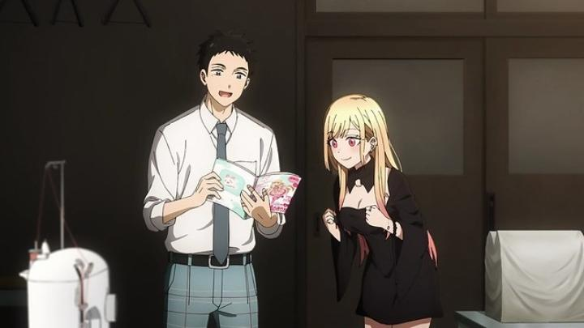

I remember when the manga for "My Dress-Up Darling" was heavily advertised in the late 2010's, being the new hit romance series of the hour. An anime was bound to follow, but I was surprised at the quick turn-around time (2022, just a few years after the manga first released). Comedy and romance aside, it focuses squarely on an overlooked part of modern culture: cosplay. Sure, it'd be a little confusing for anime, the thing people cosplay as, to also cosplay themselves, but we've seen more confusing stuff. Things start with Gojo, the typical quiet loner in high school. He has a passion and aptitude for crafting Hina Dolls, small old-fashioned dolls with beautiful clothing, taking after his grandfather whom he helps run a shop with. But a bullying incident as a child ("dolls are for girls!") causes him to avoid social contact, instead finding pleasure in his hobby. With an intro scene of literally falling from the air, Marin enters his life, a fellow student and local popular girl. She has her own secret hobby, kept secret from her friends to avoid teasing: she loves anime and games, and wants to begin making costumes to cosplay as her favourite characters. The problem is she has no skill in creating clothes... but Gogo does, for miniatures anyway. With excitement in finding someone who can help her, Marin pleads to Gojo to make her an outfit, and he agrees. Thus begins the show's semi-realistic adventure into the world of cosplay and fandom. I initially assumed the manga and anime was primarily for women, but the Wikipedia artcile cites it as being primarily for "young adult men." The fanservice makes that clear early on: Marin's first outfit is for a character from an erotic video game called "Slippery Girls 2." Having no experience with human contact, let alone with women, Gojo is immensely shy, including around the issue of taking precise measurements of Marin's body. "No problem!" exclaims Marin on an unexpected visit to his home - she's wearing a bikini under her clothes, so she doesn't have to strip! Naturally, this doesn't solve Gojo's problem at all, but this outgoing, somewhat oblivious personality (and this scene in particular) helped solidify Marin as a new fantasy girl for the anime community to fawn over. This sort of fanservice is fairly frequent, and at times, uses distasteful anime tropes (the introduction of fellow cosplayer Sajuna is a clear example). But the majority of it is respectful, either playing to Marin's personality or to the realities of cosplaying (for example, excessive sweating from poorly-designed costumes, or figuring out how to hide large breasts to play a male character). Marin feels like a fairly authentic girl by anime standards, and her lack of sexual awareness around Gojo could be attributed to her seeing Gojo as simply a friend, talking to him like she would to any other girl, about something she's passionate about. When Gojo gets invested in making the outfits, he too gets tunnel-vision and completely forgets the awkwardness, if only for brief moments. However, midway through the first season, Marin secretly realizes that she might be developing a legitimate crush on Gojo, and for brief moments, she too becomes self-aware and embarrassed. It's super cute, and even though they don't start officially dating by the end of that first season, it's clear that their path will lead to it in good time. And in the case of Gojo, he's a respectful man to his new female friends, despite the show hinting at some very honest physical reactions during certain scenes. With the right mindset, this is a great show for both men and women looking for a romantic-comedy, and especially for couples to watch together.  Aside from the character-driven interactions driving the entertainment, I can't help but also acknowledge that this is an "edu-tainment" show, educating viewers on an aspect of modern culture. We learn about the details about making costumes, how to best use makeup and tricks to change your face, where to buy materials, the costs associated with them, etc. I learned a lot, but there were also scenes where it felt like the show was simply giving me a lecture, hoping I'd be excited just because the characters were. Hopefully, this could be put to the side in favour of the romance in future seasons. The manga has a unique design sense to the characters, and the show does a decent job bridging the gap between it and more common anime design choices. I can't say I love the design of either the two leads: Marin's makeup and hair is overdone, with multiple piercings that make it look like her ear is in a torture device. Gojo dresses like a craftsman from 1800's Japan when out of school, which some citizens still do today, but boy does it look out of place. All that said, both designs say everything you need to know about these characters, and are distinct. Naturally, a lot of attention is put into the costumes, both the overall look and the intricate elements that put it together. The animation is fairly good, including some short bits that allow the animators to let loose whenever the characters watch the in-universe cartoon their cosplay is based on. I had a slight nagging feeling that character animation was stiff at times, as if they rotoscoped a 3D model to keep characters "on-model," which would be important given the context of this series... but this was less noticable while watching. On another note, the end credits are a completely different style from any anime I've seen, like something you'd see in the artist's alley section of an anime convention, which is super cute, but jarring. This might all be coming from the studio being Cloverworks, a relatively new studio with new young blood, who might be paving the way with their own methods of doing things. Music is pleasant, but doesn't factor much into the show. The English dub is quite good, featuring new-comer Paul Dateh as Gojo in his first role, and Amanda Lee (better known for her anime-cover music career) as Marin. Both fit their characters well, and the English slang for Marin ("super-adorbs!," "I can't even!," etc.) is all spot-on to the tone of the show, if just slightly overdone in the script. I've been vaguely curious about the world of cosplay, and "My Dress-Up Darling" is a cozy way to learn and appreciate it, coupled with an exciting romance between two teenagers. It's super sweet too, and I'm rooting for those two lovebirds, which pretty well locks me into future seasons if production continues. Given that Marin and Gojo each represent common traits of almost the entire anime fandom, this should be easy to recommend to that core audience.
- "Ani" More reviews can be found at : https://2danicritic.github.io/ Previous review: review_My_Dogs,_Jinjin_and_Akida Next review: review_My_Entire_High_School_Sinking_Into_The_Sea